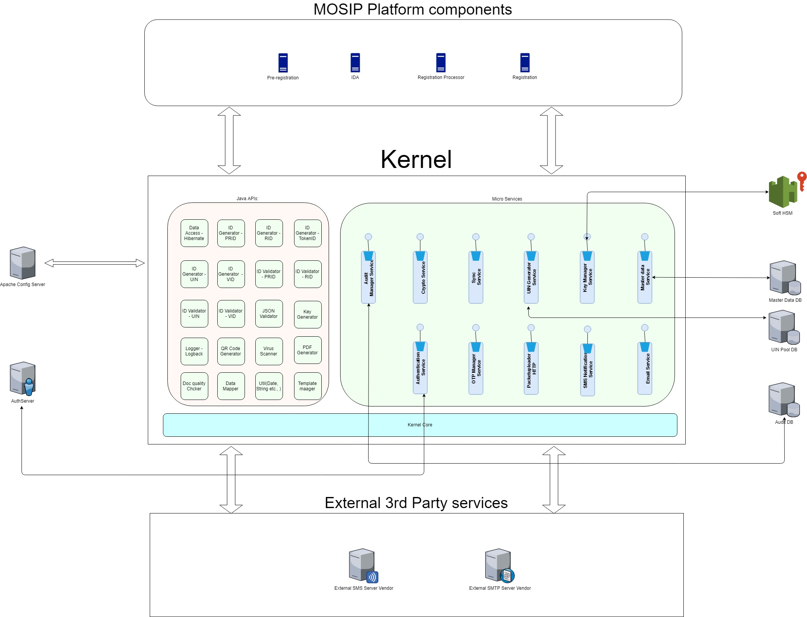

Kernel is on which MOSIP services are built. Kernel is a platform to build higher-level services as well as a secure sandbox within which the higher-level service functions. Kernel provides a bedrock to build and run the services by providing several significant necessary technical functions. CK makes it easy to build the higher-level services (domain services, batch services and core services) by taking care of fundamental features so that individual services are concerned with specific business functions. CK provides an active framework that ensures structure and rules within which the higher-level services operate.
Architecturally Significant Use Cases¶
Kernel as a distinct module is not brought out in the system requirements. The need for Kernel is identified during the architecture process. Hence, there are no ASRs specific to Kernel that are derived from system requirements. Kernel components contributes towards achieving the overall system requirements and hence the high-level ASRs are applicable to Kernel as well.
Provide a common technical platform to build higher-level functional services¶
Kernel provides the core functionalities and services, on top of which the components can be added and built. There are mainly 2 kinds of functionality providers. One is the Java API and the other is RESTful micro services. All the components inside the Kernel module are pluggable.
Provide a common framework that provides essential features as a service¶
In addition to the Java API libraries, Kernel provides the functionalities and features as independent micro services. Each services can be managed independently of other services.
Provide a common framework that abstracts all common and routine concerns¶
All the cross cutting concerns across the various top level modules are handled in the Kernel. So essentially, if any common functionality which is used by more than one high level component is defined in the kernel.
Provide secure sandbox for higher-level services to operate in¶
Kernel provides the controlled core part of the platform where the functionalities and services can be used by the other components.
Ensure security as a critical concern is handled by the system¶
Kernel addresses the security concerns by the platform such as Key Management, Cryptography, Defining security policies and Providing authentication.
Logical view¶
